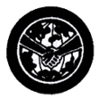

Global Citizenship
- Gain basic knowledge of the geography, history, customs, and characteristics of people of at least three countries other than your own
- Correspond regularly for a period of not less than six months (write at least three letters and receive at least two replies) with a Scout of another country.
- Give an informative talk of at least 3 minutes duration to the members of your Patrol/Crew or Troop/Outfit on the interest and knowledge gained by corresponding with or visiting a Scout from another country.
- Do the following:
- Tell in his own words how the Scouting Movement began. Point out on a world map the five Scouting regions and identify at least thirty countries which have Scouting.
- Describe and demonstrate at least three ways by which Scouts from various countries can recognize one another (e.g., by similarity in uniforms, insignias, badges, oath and law, motto, sign, handshakes, etc.)
- Explain the organization and operation of the World Scout Movement (Conference, Committee, and Bureau)
- Do any three (3) of the following:
- Identify the flag of the United Nations and those of at least twelve member countries
- Read the preamble of the Charter of the United Nations; outline in your own words the purpose of the United Nations organization as set forth in Chapter I of its charter.
- Describe the work of the specialized agencies of the United Nations
- Read the Universal Declaration of Human Rights and list at least five rights directly related to you and your family.
- Do any three (3) of the following:
- Take part in some practical activity of an international character such as the collection or distribution of relief supplies, the reception and entertainment of visitors from overseas, or assist in a project of a non-partisan organization to promote world brotherhood.
- Camp at least five days with Scouts of another country either in your own or in a foreign country. Keep a log book covering the event and note down your impressions. Show that you have a fair understanding of the culture, customs, and characteristics of the Scouts you had camped with.
- Carry on a conversation with another person in a foreign language for at least five minutes; translate at least 100 words of that language given by the Counselor
- Keep an album or scrapbook for at least one year depicting activities of another country
- Relate briefly to the members of your Patrol/Crew or Troop/Outfit the history of Scouting in three member countries of World Scouting. Draw their Scout Emblems.
|